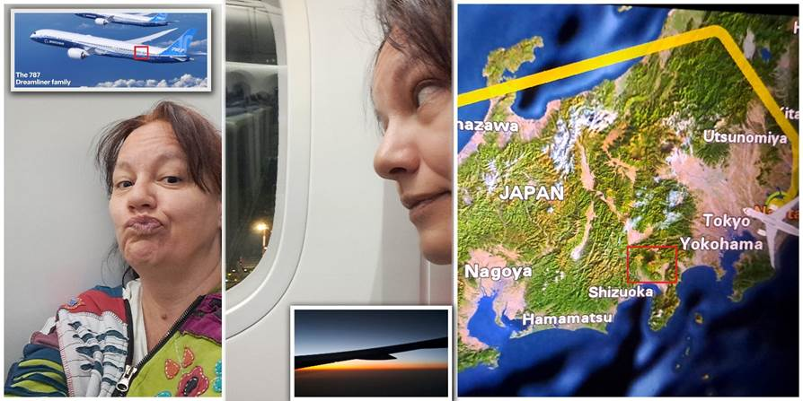

Prvi dan puta: Krug oko Fudžija i WC šolja
Osmislila sam milion detalja za put i onda u polasku, na brzinu, obula pogrešne, manje udobne patike. A obuća je najvažnija stvar na putu.
Avion do Poljske je bio mali. Dva i dva sedišta u redu. Nismo rezervisali, a dobili smo jedno pored drugog. Ne razbacaju po avionu kao Wizzair. Ja pored prozora: sreća, sreća, radost. Kad ono, mi na krilu. Od celog aviona, na krilu! Još prozor pomeren, moram se zavaliti i iskriviti da bih nešto videla, tako da nisam zalepila nos nego sam samo bacala poglede kroz prozor povremeno. Imam i prelepu sliku oblaka sa krilom u glavnoj ulozi i preko cele slike. Da ne budem malodušna, dobili smo i odsjaj sunca na njemu. Predivota. Tako da sam umesto zjakanja kroz prozor čitala knjigu o lordu koji se, naravno, zaljubio.
Stigli smo u Varšavu. Četiri sata je bila pauza u Poljskoj. Gnjavila sam ih da me zabavljaju. Igrali smo kaladont, "Ja vidim, ja vidim", pogađanja životinja... Vraćaju mi za sva čekanja kod lekara i putovanja kolima kad sam ja njih zabavljala. Relativno brzo je prošlo. Bili su slatki i potpuno posvećeni zadatku. Nagovorila sam ih da snimamo i video-tranzicije. Preskakali smo telefon na aerodromu, a treba da upadnemo u Japan. Luka će montirati.
Avion za Tokio je nešto. Ekrančić sa filmovima, jastuče, ćebence. Pored mene Japanka. Sita sam se izdivanila sa tri reči koje znam. Bila je u Portugalu i nije plivala jer je hladno, a u Japanu nije hladno. Guglala je slike Novog Sada. Smejala se kad je čula da smo smešteni u Akihabari. Koristile smo ono čuveno grleno "Eeeee" sa raznim intonacijama. To mi je bilo baš zabavno. Izdašno sam ga koristila u nedostatku rečnika.
Ali opet sam uz prozor kog nema! I to, od celog aviona, jedino u mom redu nema prozora. Pa da li je to moguće? Sada treba da se nagnem napred i dahćem ovima ispred za vrat ako se pojavi Fudži. A Japanka kaže da neće. Da smo sa pogrešne strane aviona. Nije da sam pitala avio-kompaniju sa koje strane da sednem da vidim Fudži. I platila sedišta.
Osvetljena Varšava ispod nas i odosmo.
Dobili smo indijske oraščiće, jedno pet u kesici, i sok. I slušalice za filmove. Prođoše kolica sa ručkom. Zamirisalo. Ne znam da li i nama sleduje. Japanka cevči sok koji je na stoliću, a ja čekam da popije da idem u WC.
Imamo gomilu stjuarta i stjuardesa u avionu. Jedno deset. Sad, i ako dignem Japanku, bojim se da mi ne promakne večera. Je l’ večera u jedan ujutru ili doručak?
Uspela sam da dremnem oko sat vremena pre pet indijskih oraščića. Deca su dva reda ispred mene. Luka se srećan okrenuo. Dobili su ručak. Odlučila sam da je ručak, jer miriše na kuvano.
Oo, pa mi smo gospoda, posle svih Wizzairova. Kakva gozba! Jedino i dalje imamo samo 10 kg prtljaga za poneti.
Ok, nećemo ostati gladni. Džaba sam nakupovala sendviče na aerodromu. Sad moramo i njih pojesti jer ni meso ni mesne prerađevine ne smeju da se unesu u Japan. Još samo da, kao pravi influenser, uslikam hranu, pa odoh da jedem. Mmm, raj za nepca. Pakosno uživam što Japanka jede viljuškom i nožem. Nema štapića. Bar ne još.
Rekla sam Japanki: „Oiši des ne?“ (Ukusno je, zar ne?) i složila se sa mnom.
Ni zrna žita okupatoru, sve sam smazala, puna do nosa, i sad me predivan kolač, od borovnice, sa listićima bele čokolade gleda. Muka je to. A Japanci ne daju ni uvoz voća, pa mogu da mi ga uzmu na aerodromu.
Prazno je mesto između nas. Mami me da legnem, al’ se bojim da ću se iskriviti pa neću moći da ustanem.
Sad tek nema šanse da odem u toalet. Pun joj je sto. Ona to lagano.
Neki silni ljudi su poustajali. Red pred toaletom. Proradio im stomak od ručka.
E, sad, između mog jedenja kolača (da mogu da dignem svoj sto) i Japankinog tonjenja u san treba uloviti WC...
Oo, imamo stolić koji se sklapa na pola. Odoh.
Lepo sam kazala: „Sumimasen. Toiruni ikimas. Arigatou gozaimas.“ (Izvinite, idem u WC. Hvala.) Ona meni nešto odgovori, nemam pojma šta.
I toalet im je nešto. Mirišljav, prostran. I balzam za ruke im lepo miriše. Dok sam dočekala red i došla, Japanka mi zaspala. Ajao. Sumimasen...
Ovo su već veštičarenja. Poželela sam svitanje da vidim iz aviona, probudila se u tri ujutru i eto ga. Doduše, zalazak. Trajao minut. Opet je mrak. Imam slike kao dokaz.
Žedna ko đavo od onog prejedanja, mrzi me da kopam vodu iz ranca ispod sedišta ispred. Ne mogu se tol’ko ni sagnuti. Kad ide stjuart i nosi čaše i flašu vode. U tri ujutru. Bez kolica. Čaše i voda.
Ne može se spavati sedeći. Nekako sam se bila raširila preko dva sedišta, guzicu smestila u rupu između sedišta, al’ ne ide. Dremnem maksimalno sat vremena i budim se. Bojim se da se ne ukočim.
Ovo su neka đavolja posla. Već sat vremena sunce zalazi. Nebo je ljubičasto. A avion se trese ko blesav. Baš dugo. Rekli nam da se vezujemo. Ovo trese gore nego kad Duško juri po rupama na Telepu. A ne idemo kroz oblak.
Ispostavilo se da je to ljubičasto bila Aurora Borealis. Pa koji smo mi srećnici.

Izlomih se živa na ova dva sedišta. Mislila sam izneće me, ali dobro se držim. Uspela sam i da odspavam na mahove po sat vremena. Sad smo nad Koreom. Deca našla voće. Ja otišla, sklonili, sada će da služe doručak. Miriše mi na kuvano. Pri tom stjuarti nemaju pojma ni kada ni gde će se videti Fudži. Nisu mi više tako slatki.
Još malo ćaskala sa Japankom da je bilo jabuka, ali sad nema pošto će doručak. Što bih volela da imam s kim da pričam japanski.
Stigao doručak. Gjoza. Baš sam htela da probam u Japanu. Joko san kaže da ne liči na japansku gjozu. Rekla sam da sam na aerodromu kupila sendvič sa mesom, ali nismo pojeli jer smo imali doručak i večeru u avionu, a u Japan ne sme da se unese meso (na japanskom, naravno, jer Joko san očekivano ne govori engleski. Kako je stigla do Portugalije?). Rekla mi je da ga sakrijem i pravim se blesava. Japanci umeju tako da razmišljaju?
Ovde se niko osim mene ne pali na Fudži. Ni stjuarti, ni putnici, ni Joko san. Kapetan neće reći "sa vaše desne strane je sveta planina Fudži". Moram na ekrančetu da pratim avion. Joko san me teši da ću ga videti iz šinkansena, voza metka, kad budem išla u Kjoto. Ona je i dalje ubeđena da će Fudži biti sa druge strane aviona.
Joko san je vrlo glasna u avionu. Izgleda da ćute samo u vozovima. Uslikala sam Tate jamu planinu u nedostatku Fudžija.
Lažljivci jedni. Nije ni čudo što kapetan ništa ne kaže, ni što osoblje ne zna sa koje strane je Fudži, kad ga zaobilaze u širokom luku pa se ni ne vidi. Nek su mi oni prodali sedišta sa strane Fudžija i bez prozora.

Za utehu sam dobila zalazak sunca nad zemljom izlazećeg sunca. Pirinčana polja, roza nebo. Smrkava se tek što smo se probudili.

O, došao je dan da sletim u Japan (pevam stihove grupe Smak, koji su u originalu: O, da li će doći dan da sletim u Japan).
Čuvene WC šolje sa n dugmića smo susreli već na aerodromu. Ne znam u čemu je problem koji drugi spominju. Odmah sam ih savladala. Zaglavila guzicu u otvor da me celu ne opere i peri napred, nazad, duvaj, suši, muzika da se ne čuje kako piškim, jačina i toplota mlaza se podešavaju, po želji se greje daska.
Sa aerodroma smo došli busom do tokijske železničke stanice. Tu smo iskusili poslovičnu japansku ljubaznost. Prišao nam jedan mladi par i pitali su nas gde treba da idemo. Izgledali nam sve opcije na telefonu i videli da nam taksi za nas 4 najviše odgovara. Zaustavili nam taksi na ulici uz sve osmehe. Uputili taksistu gde da nas vozi, zbrinuli nas. Bili su preslatki i znali su engleski.

Iako smo stigli umorni, Tokio nas je vukao da ga vidimo. Pre šetnje smo otišli u 7 Eleven prodavnicu. Nakupovali smo sve što smo videli na instagramu. Deca su pojela tuna majo onigiri (pirinač, tuna i majonez) kao iz crtaća.

Ovde je pola četiri ujutru. Nama oči na vrh glave. Upravo smo došli iz šetnje. Šetali smo po Akihabari. Deca su našla najveću robnu kuću sa suvenirima na n spratova, Don Kihote, bez ijedne stolice (što je važno jer nigde nisam mogla sesti). Svašta njima interesantno su videli. Pokupovali smo Kit Katove sa ukusom jagode, narandže i macha čaja. Luka čarape na prst za japanke. Neke džidža bidže. Platili smo bez poreza uz pasoš. Upakovala nam je i rekla da ne otvaramo dok ne izađemo iz Japana. Ma baš će ona znati. Mi smo sve raspakovali i pojeli. A onda se setili da je verovatno sve na pasošu i da će tražiti na carini.
Hramovi su im ili budistički, gde veruju u princa Budu koji je dostigao stanje nirvane, mira i spokoja. Ili su šintoistički, gde veruju u prirodne sile (oluja, Srećna mačka, Sveta planina Fuji, bik, lisica, zec...). Šintoistički se odmah prepoznaju po Tori kapijama koje iz svetovnog vode u duhovni svet. Prolazi se kroz njih levom ili desnom stranom jer je sredina rezervisana za Bogove.
Posle smo u tri ujutru išli do čuvenog hrama Senso ji. Baš je lep.
Tek je po ko prošao, a danju se ne može proći od gužve. Čak skrenu u sporednu ulicu da ne smetaju ako se slikamo. Islikali smo se. I sa nekim devojčicama koje, kad su nas slikale, su slikale i selfi pa imamo i njihovu sliku.


Duško nas je zeznuo. Njegov svemogući adapter za sve vrste priključaka na svetu nam ne radi. Ništa ne možemo da napunimo. Ni telefone, ni Lukina sokoćala. Luka je izašao napolje da potraži negde da kupi. U četiri ujutru. Tada još nismo znali da mogu da se iznajme u 7 Eleven prodavnicama.
Luka je našao punjač za telefon. Sreća. Rešena agonija da neću moći da slikam prvi dan u Japanu.
Iznervirao se što slike sa aparata nisu u raw formatu nego jpg, ostalo je tako podešeno još od Kolmara, i sad kaže da su đubre. A baš se trudio i puno slikao.
Da ne prekinemo tradiciju jeli su nudle kad smo došli, ups ramen.
Ova WC šolja će nas pokvariti zauvek.
Ne propustite sledeću avanturu!
Kad Sandra krene u novi kraj sveta, vaš inbox prvi sazna. Prijavite se i stižu vam sve nove priče mejlom.